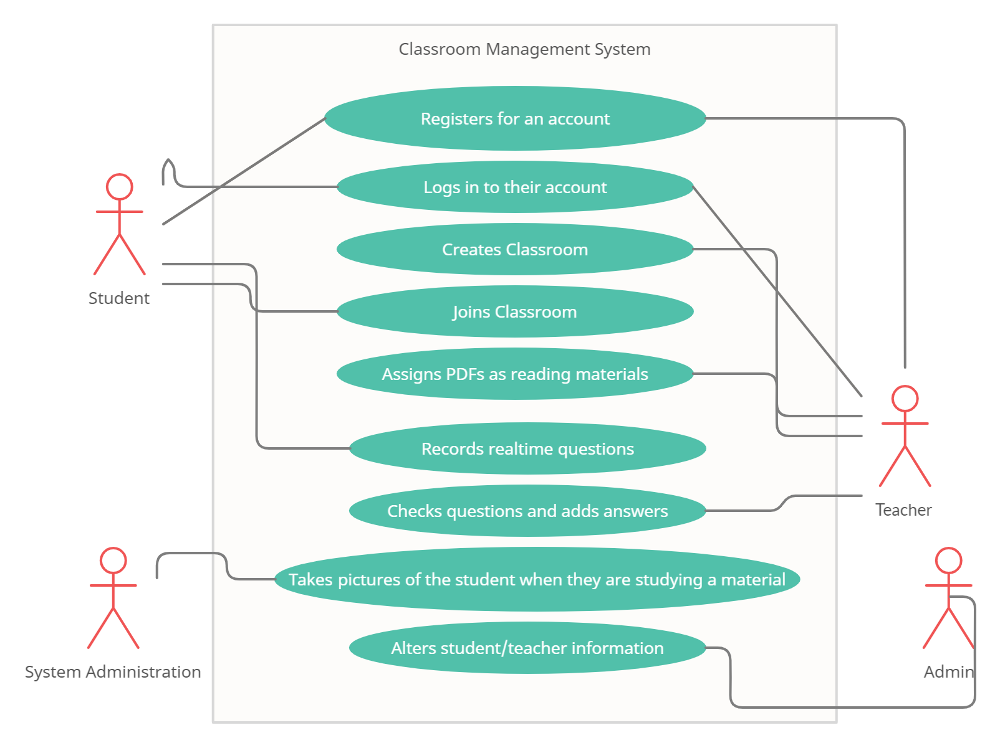

Software requirement specification for Odhyayon
Table of Contents
Revision History
1. Intrduction
1.1 Purpose
1.2 Document Conventions
1.3 Intended Audience and Reading Suggestions
1.4 Product Scope
1.5 References
2 Overall Description
2.1 Product Perspective
2.2 Product Functions
2.3 User Classes and Characteristics
2.4 Operating Environment
2.5 Design and Implementation Constraints
2.6 User Documentation
2.7 Assumptions and Dependencies
3 External Interface Requirements
3.1 User Interfaces
3.2 Hardware Interfaces
3.3 Software Interfaces
3.4 Communications Interfaces
4 System Features
4.1 Registration with OCR or manually
4.2 Upload and Render PDF
4.3 Facial Detection & Eye Tracking Report
5 Other Nonfunctional Requirements
5.1 Performance Requirements
5.2 Safety Requirements
5.3 Security Requirements
5.4 Software Quality Attributes
5.5 Business Rules
class="tab"
6 Other Requirements
Appendix A: Glossary
Appendix B: To Be Determined List
1. Introduction
1.1 Purpose
The purpose of this document is to give a detailed description of Odhyayon.
This document will provide details about how this system works, the interfaces of the system,
the features and how this system will react to user inputs/actions. This document will later
be submitted to Nabeel Mohammed for approval.
1.2 Document Conventions
This document is styled according to IEEE SRS template.
1.3 Intended Audience
This document is intended for developers, writers of this documentation, professors, business
analysts, users and testers.
1.4 Product Scope
The purpose of this project is to create software that will track the reading progress of
students. This system will make distance learning more accessible and provide tools for
teachers to assign reading materials for students and track them more conveniently.
All the features of this software will be fundamental and user-friendly. It will also
require a minor interaction possible, making the system very straightforward.
1.5 References
2. Overall Description
2.1 Product Perspective
The system will be designed to help teachers keep track of the reading progress of a student
on their assigned reading materials provided by them.
2.2 Product Functions
The prime functionalities of this system are described below:
- 1. Students and teacher can create their accounts.
- 2. Dashboard functionality where teachers can assign their materials and students can read/view those
materials.
- 3. Face detection to ensure that correct person is reading the materials also will be used for tracking
purposes.
- 4. Students can ask question in various way like writing or through an audio clip
2.3 User Classes and Characteristics
There will be three user classes in this system:
- Admin:
-Have full access to all the information and codes.
-Can create and remove users that is teachers and students.
-Can monitor all the activities of this software.
- Teachers:
-Can access Teacher Dashboard
-Add students to the classroom by sharing classcode
-Upload reading materials as tasks.
-Can track how much progress is done.
- Students:
-Can access Student Dashboard
-View reading materials.
-Can ask questions to the teachers in various methods.
2.4 Operating Environment
- Backend:
- Hardware Platform: x86 ,x32
- Operating System: Windows 10
- Programming Language: Python 3.9.6
- Web Framework: Django 3.2.5
- Database: MySQL 8.0
- Frontend:
- Android App:
- Hardware Platform: arm
- Operating System: Android 6.0+
- Programming Language: Kotlin
- Web App:
- Framework: React
- Android App:
2.5 Design and Implementation Constraints
2.6 User Documentation
2.7 Assumptions and Dependencies
This system will be depended on external libraries which will be used for our Face Recognition function
Facial Recognition library from Python's PyPI
3. External Interface Requirements
3.1 User Inerfaces
Some screen mockups could be like these-


Home page:
Login screen:
Sign up screen:
Website:
A home screen will be shown/Login and signup screen will be shown.The user will signup/login
according to his
profession(teacher/student).After login the teacher will see the dashboard where his courses will be seen.(!!)
Students will have to add photo when signing up and will see the dashboard where student can join classroom
through code.And some features like reading materials, tasks, deadlines, record questions and face recognition
will be there.
App:
Same as above
3.2 Hardware Interfaces
RAM: 1 GB+
Web/Phone camera: 2MP or more
CPU: 1GHz
3.3 Software Interfaces
Requirements :
Kotlin
React
Python
Django
Bootstrap
SQL
Volley or Retrofit
3.4 Communications Interfaces
RESTful API over HTTP will be implemented for communication purpose.
4. System Features

1.
Use Case Name: Registers for an account
Actors: Teacher/Student
Type: Primary
Description: Unregistered students/teachers can choose this option to register into their account using their necessary information, such as email, password, first name, last name, etc.
Typical Course of action:
Actors Actions
System Response
1. Actor enters the Sign up page
2. System prompts the Sign up entry blocks
3. Actor enters information in a valid formation
4. Actor clicks the “Sign Up” Button
5. System stores the information
6. System prompts a Sign up successful message
7. Redirects the user to the log in page
Alternative course of action:
5.1 System finds information entered that are in invalid format, asks the user to enter the specific information in the right format.
5.2 System cannot access the database due to connection error, system prompts the message “Connection Error”.
Use Case Name: Registers for an account
Actors: Teacher/Student
Type: Primary
Description: Unregistered students/teachers can choose this option to register into their account using their necessary information, such as email, password, first name, last name, etc.
Typical Course of action:
| Actors Actions | System Response |
|---|---|
| 1. Actor enters the Sign up page | 2. System prompts the Sign up entry blocks |
| 3. Actor enters information in a valid formation | |
| 4. Actor clicks the “Sign Up” Button | 5. System stores the information |
| 6. System prompts a Sign up successful message | |
| 7. Redirects the user to the log in page |
Alternative course of action:
5.1 System finds information entered that are in invalid format, asks the user to enter the specific information in the right format.
5.2 System cannot access the database due to connection error, system prompts the message “Connection Error”.
2.
Use Case Name: Logs in to their account
Actors: Teacher/Student
Type: Primary
Description: Registered students/ teachers can log in to the system by providing their email address and password.
Typical Course of action:
Actors Actions
System Response
1. Actor enters the Log in page
2. System prompts the Log in entry blocks
3. Actor enters information in a valid formation
4. Actor clicks the “Log in” Button
5. System matches the information
6. Redirects the user to the user dashboard
Alternative course of action:
5.1 System finds information entered that are in invalid format, asks the user to enter the specific information in the right format.
5.2 System cannot access the database due to connection error, system prompts the message “Connection Error”.
5.3 System doesn’t find matching information in the database, prompts a message saying wrong information entered
Use Case Name: Logs in to their account
Actors: Teacher/Student
Type: Primary
Description: Registered students/ teachers can log in to the system by providing their email address and password.
Typical Course of action:
| Actors Actions | System Response |
|---|---|
| 1. Actor enters the Log in page | 2. System prompts the Log in entry blocks |
| 3. Actor enters information in a valid formation | |
| 4. Actor clicks the “Log in” Button | 5. System matches the information |
| 6. Redirects the user to the user dashboard |
Alternative course of action:
5.1 System finds information entered that are in invalid format, asks the user to enter the specific information in the right format.
5.2 System cannot access the database due to connection error, system prompts the message “Connection Error”.
5.3 System doesn’t find matching information in the database, prompts a message saying wrong information entered
3.
Use Case Name: Joins Classroom
Actors: Student
Type: Primary
Description: Students can join the classroom using the shared classroom code from the teacher.
Typical Course of action:
Actors Actions
System Response
1. Student clicks on the join class option on the dashboard
2. System prompts a pop up that asks for the classroom code
3. Student enters the classroom code
4. Student clicks on the “Join” Button
5. System matches the classroom code with the codes present in the database
6. System takes the user to the classroom dashboard
Alternative course of action:
5.1 System cannot access the database due to connection error, system prompts the message “Connection Error, could not create class”.
5.2 System finds no matching classroom, prompts the message that no classroom is found.
Use Case Name: Joins Classroom
Actors: Student
Type: Primary
Description: Students can join the classroom using the shared classroom code from the teacher.
Typical Course of action:
| Actors Actions | System Response |
|---|---|
| 1. Student clicks on the join class option on the dashboard | 2. System prompts a pop up that asks for the classroom code |
| 3. Student enters the classroom code | |
| 4. Student clicks on the “Join” Button | 5. System matches the classroom code with the codes present in the database |
| 6. System takes the user to the classroom dashboard |
Alternative course of action:
5.1 System cannot access the database due to connection error, system prompts the message “Connection Error, could not create class”.
5.2 System finds no matching classroom, prompts the message that no classroom is found.
4.
Use Case Name: Creates Classroom
Actors: Teacher
Type: Primary
Description: Teachers can create classroom where they can add students. Every class will have it’s unique code that the students could use to join the class.
Typical Course of action:
Actors Actions
System Response
1. Teacher clicks on the add class button
2. System prompts a pop up with input blocks for the necessary details of the classroom, such as name, section, description, etc
3. Teacher enters classroom information
4. Teacher clicks the “Create Class” Button
5. System enters the information in the database
6. System generates a unique code for the classroom
7. System creates a box on the dashboard with the link to the classroom
8. Copies the classroom code from the box and shares with students
Alternative course of action:
5.1 System cannot access the database due to connection error, system prompts the message “Connection Error, could not create class”, takes back to the dashboard.
Use Case Name: Creates Classroom
Actors: Teacher
Type: Primary
Description: Teachers can create classroom where they can add students. Every class will have it’s unique code that the students could use to join the class.
Typical Course of action:
| Actors Actions | System Response |
|---|---|
| 1. Teacher clicks on the add class button | 2. System prompts a pop up with input blocks for the necessary details of the classroom, such as name, section, description, etc |
| 3. Teacher enters classroom information | |
| 4. Teacher clicks the “Create Class” Button | 5. System enters the information in the database |
| 6. System generates a unique code for the classroom | |
| 7. System creates a box on the dashboard with the link to the classroom | |
| 8. Copies the classroom code from the box and shares with students |
Alternative course of action:
5.1 System cannot access the database due to connection error, system prompts the message “Connection Error, could not create class”, takes back to the dashboard.
5.
Use Case Name: Assigning PDFs as reading materials
Actors: Teacher
Type: Primary
Description: Teachers will assign PDFs as reading materials for the classroom, with a specified deadline.
Typical Course of action:
Actors Actions
System Response
1. Teacher enters the classroom dashboard
2. System opens the classroom dashboard
3. Teacher clicks on the “Add Tasks” option
4. System asks the user with a popup to upload the file
5. Teacher selectes the file and presses open
6. System adds the file and provides the user a field for them to add any information that needs to go with the file
7. Teacher adds the details and the deadline of the task and presses “Add”
8. System adds this on the classroom dashboard as an assignment with specified deadline for the students
Alternative course of action:
5.1 Teacher uploads a file of the wrong format, the system prompts the message “Wrong file format!”
Use Case Name: Assigning PDFs as reading materials
Actors: Teacher
Type: Primary
Description: Teachers will assign PDFs as reading materials for the classroom, with a specified deadline.
Typical Course of action:
| Actors Actions | System Response |
|---|---|
| 1. Teacher enters the classroom dashboard | 2. System opens the classroom dashboard |
| 3. Teacher clicks on the “Add Tasks” option | 4. System asks the user with a popup to upload the file |
| 5. Teacher selectes the file and presses open | 6. System adds the file and provides the user a field for them to add any information that needs to go with the file |
| 7. Teacher adds the details and the deadline of the task and presses “Add” | 8. System adds this on the classroom dashboard as an assignment with specified deadline for the students |
Alternative course of action:
5.1 Teacher uploads a file of the wrong format, the system prompts the message “Wrong file format!”
6.
Use Case Name: Records Realtime Questions
Actors: Student
Type: Primary
Description: Students can add questions when they are going through the reading materials. To add question they can use the comment option, or add a recorded voice message, and highlight the specific part of the document that they are reffering to.
Typical Course of action:
Actors Actions
System Response
1. Student click on the assigned PDF
2. System opens the PDF
3. Student goes through the PDF
4. Student records the question they have and highlight the part they are referring to
5. System takes in the recorded question and stores in the database
Alternative course of action:
5.1 System cannot access the database due to connection error, system prompts the message “Connection Error, could not add the question”, takes back to the PDF file.
Use Case Name: Records Realtime Questions
Actors: Student
Type: Primary
Description: Students can add questions when they are going through the reading materials. To add question they can use the comment option, or add a recorded voice message, and highlight the specific part of the document that they are reffering to.
Typical Course of action:
| Actors Actions | System Response |
|---|---|
| 1. Student click on the assigned PDF | 2. System opens the PDF |
| 3. Student goes through the PDF | |
| 4. Student records the question they have and highlight the part they are referring to | 5. System takes in the recorded question and stores in the database |
Alternative course of action:
5.1 System cannot access the database due to connection error, system prompts the message “Connection Error, could not add the question”, takes back to the PDF file.
7.
Use Case Name: Checks questions and adds answers
Actors: Teacher
Type: Primary
Description: Teachers can answer the questions asked by the students, either through a text, or a voice message.
Typical Course of action:
Actors Actions
System Response
1. Teacher clicks on the assigned reading material, and opens the PDF
2. System opens the PDF
3. Teacher clicks on the “Check questions” option
4. System opens all the questions asked, fetches it from the database
5. Teacher records the answer and presses “Add Answer”
6. System takes in the recorded answer and stores in the database to show it to the students
Alternative course of action:
4.1 System cannot access the database due to connection error, system prompts the message “Connection Error, could not find the question”, takes back to the PDF file.
4.2 System does not find any questions asked by students, prompts the message “No question asked from this material”, takes back to the PDF file.
6.1 System cannot access the database due to connection error, system prompts the message “Connection Error, could not add the answer”, takes back to the PDF file.
Use Case Name: Checks questions and adds answers
Actors: Teacher
Type: Primary
Description: Teachers can answer the questions asked by the students, either through a text, or a voice message.
Typical Course of action:
| Actors Actions | System Response |
|---|---|
| 1. Teacher clicks on the assigned reading material, and opens the PDF | 2. System opens the PDF |
| 3. Teacher clicks on the “Check questions” option | 4. System opens all the questions asked, fetches it from the database |
| 5. Teacher records the answer and presses “Add Answer” | 6. System takes in the recorded answer and stores in the database to show it to the students |
Alternative course of action:
4.1 System cannot access the database due to connection error, system prompts the message “Connection Error, could not find the question”, takes back to the PDF file.
4.2 System does not find any questions asked by students, prompts the message “No question asked from this material”, takes back to the PDF file.
6.1 System cannot access the database due to connection error, system prompts the message “Connection Error, could not add the answer”, takes back to the PDF file.
8.
Use Case Name: Takes picture of a student when they are studying a material
Actors: System Administration
Type: Primary
Description: When a student is studying a material, the system will take pictures of the student from time to time and run a face recognition on them to identify them and to keep track of the student’s studying period.
Typical Course of action:
Actors Actions
System Response
1. Students Open the PDF
2. System opens the camera
3. System takes picture and runs a facial recognition
4. Student continues to go through the material
5. System keeps taking pictures on a time interval
6. System saves all the pictures on the database
Alternative course of action:
2.1 System cannot access the camera, reloads the webpage and asks the user to give access to the camera.
2.2 The user denies the system from having access to the camera, the system stops the user from having access to the reading material.
3.1 The System does not recognize the student, logs out the student from their dashboard.
6.1 System cannot access the database due to connection error, system prompts the message “Connection Error, we cannot save the pictures”, reloads the entire page.
Use Case Name: Takes picture of a student when they are studying a material
Actors: System Administration
Type: Primary
Description: When a student is studying a material, the system will take pictures of the student from time to time and run a face recognition on them to identify them and to keep track of the student’s studying period.
Typical Course of action:
| Actors Actions | System Response |
|---|---|
| 1. Students Open the PDF | 2. System opens the camera |
| 3. System takes picture and runs a facial recognition | |
| 4. Student continues to go through the material | 5. System keeps taking pictures on a time interval |
| 6. System saves all the pictures on the database |
Alternative course of action:
2.1 System cannot access the camera, reloads the webpage and asks the user to give access to the camera.
2.2 The user denies the system from having access to the camera, the system stops the user from having access to the reading material.
3.1 The System does not recognize the student, logs out the student from their dashboard.
6.1 System cannot access the database due to connection error, system prompts the message “Connection Error, we cannot save the pictures”, reloads the entire page.
9.
Use Case Name: Alters Student/Teacher Information
Actors: Admin
Type: Primary
Description: An admin user can remove or alter user information of students/teachers, based on any request made by them.
Typical Course of action:
Actors Actions
System Response
1. Admin enters the Admin log in page
2. System prompts the Log in entry blocks
3. Actor enters information in a valid format
4. Actor clicks the “Log in” Button
5. System matches the information
6. Redirects the user to the admin dashboard
Alternative course of action:
5.1 System finds information entered that are in invalid format, asks the user to enter the specific information in the right format
5.2 System doesn’t find matching information in the database, prompts a message saying wrong information entered
Use Case Name: Alters Student/Teacher Information
Actors: Admin
Type: Primary
Description: An admin user can remove or alter user information of students/teachers, based on any request made by them.
Typical Course of action:
| Actors Actions | System Response |
|---|---|
| 1. Admin enters the Admin log in page | 2. System prompts the Log in entry blocks |
| 3. Actor enters information in a valid format | |
| 4. Actor clicks the “Log in” Button | 5. System matches the information |
| 6. Redirects the user to the admin dashboard |
Alternative course of action:
5.1 System finds information entered that are in invalid format, asks the user to enter the specific information in the right format
5.2 System doesn’t find matching information in the database, prompts a message saying wrong information entered
4.1 Registration with google account
4.1.1 Description and Priority
Students can register with their google accounts synced on the webpage.
4.1.2 Stimulus/Response Sequence
For automatic registration, the user will need to press on the option of sign up with google. This will automatically trugger the system to use the information used to create the google account.
4.1.3 Functional Requirements
• This will ensure an easier access to making accounts on the website providing faster service.
4.2 Upload and Render PDF
4.2.1 Description and Priority
Teacher can upload reading materials as PDF and the PDF will render in real time in students devices.
4.2.2 Stimulus/Response Sequence
Teacher will upload the pdf to our system and set a deadline. This is will trigger a push notification and email to the student's device.
4.2.3 Functional Requirements
• Teacher can upload any size of pdf or text documents. Check if the file is a valid document.
4.3 Facial Detection
4.3.1 Description and Priority
When students recieve their reading materials and start reading them. The client device will take pictures of the student's face using the front camera to ensure if the student is actually reading.
4.3.2 Stimulus/Response Sequence
There is no need for user input. The device will automatically take pictures through the front camera every minute. It'll respond either the face is actually the student's face or not and how long they spent on a single page. This will be generated as a report.
4.3.3 Functional Requirements
• Takes one picture through the front camera every 5 minutes.
• Through random sampling sends one picture from every 5 minutes for facial recognition.
• Creates a reel of all the pictures with the time it was taken at
• Through random sampling sends one picture from every 5 minutes for facial recognition.
• Creates a reel of all the pictures with the time it was taken at
5. Other Nonfunctional Requirements
5.1 Performance Requirements
The requirements are not necessarily required by the users however for maximum efficiency the system should be able to run without lagging during multiple access at the same time by both teachers and students by ensuring orderly execution to maintain data consistency. This feature will allow multiple real time access to pdfs, upload pdfs, add comments while maintaining pdfs. The system should also be able to detect faces while capturing photos for profile creation.
5.2 Safety Requirements
The system requires pictures of users while creating accounts for preventing fake profiles, however malfunctioning or data inconsistency could result in loss of data from the database that backs up the pictures.
For prevention a separate team will be dedicated to the maintenance of the database to prevent any leakage. User authorization and data encryption should be given utmost priority and permission access will be set for the database of each user carefully.
5.3 Security Requirements
- Users will be asked for consent for damage/leakage of data before proceeding for taking pictures
- Data of each user will be encrypted with a unique key so that in case of leakage the data will not be decoded easily
- A measure of authentication will be taken before any kind of access to user details or the database
- Each student and teacher will be restricted to the database, only administrators of the organization will have the right to deal with data.
- In case of malfunction, system should shutdown itself
5.4 Software Requirements
- Each section of the code for a specific function must have clear cut requirements so that test cases can be generated to pass evaluation criteria.
- While testing functionality other features must remain consistent.
- The software must support high testability for easier maintenance
- Software should be able to undergo constant bug fixes, updates, add features easily.
- Bugs must also be easily identified.
- Diagrams should be provided in test documentation for ease of understanding developers and clients both
5.5 Business Rules
- Not applicable.
6. Other Requirements
Appendix A: Glossary
- Student - Users that will be enrolled in a class created by the teacher and access class contents.
- Teacher - Users that will be able to create classes and upload pdfs.
- Admin - Users that will regulate data of both students, teachers and classroom datas and regulate the system.
- Landing Page - The page that will be visible to users without an account. Page that contains information about the website and link directing to login/signup page.
- SIgn up page - The page new users trying to make an account will be redirected to.
- Log in page - The page users will be redirected to login to their existing account.
- Dashboard - The specific page that students and teachers will be directed to after login.
Appendix B: Analysis Models
- TBD
Appendix C: To Be Determined List
- TBD